A Universe of Self-Indulgence
Between 2017 and 2019, the vast majority of my creative output consisted of projects created simply for the amusement of myself and my friends, without much consideration for a larger audience. These were short films made as personal birthday gifts, live shows put on as elaborate pranks, a video game made entirely out of inside jokes—projects with such a disparity between effort and purpose that this disparity has become an artistic statement in itself. Whatever claims to “irony” we made while doing this has surely been undercut by the sincerity with which we’ve kept the bit up. It’s pure self-indulgence.
The problem is that none of these projects make any sense to include in a professional portfolio. There’s a movie here about a person going back in time to stop one of my older movies from being made. No one should be subjected to that. Yet, such a ridiculous amount of time was put into these projects, and with such a commitment to production value, that my portfolio feels entirely incomplete without them. So I’ve decided to compile them here, presented chronologically and with the absolute minimum amount of context I could possibly give so that an outsider can maybe understand what any of it is. Unless you’re one of maybe four people, nothing on this page was made with the intention of you seeing it, so if that somehow sounds more intriguing than deterring, please enjoy what has become A Universe of Self-Indulgence.
On the heels of our recent short film, my friend and collaborator Tom Adams and I entered our senior year of high school without any specific plans for another project. As a result, our creative energy found bizarre outlets, like class projects, where we became delighted by the idea of putting in unprecedented amounts of effort.
These projects included a short film about psychological conditioning , a radio play about the dangers of social media , a "trailer" for a school dance , and an elaborate lip-sync battle performance in which we somehow convinced our high school principal to jump through a hula-hoop.
 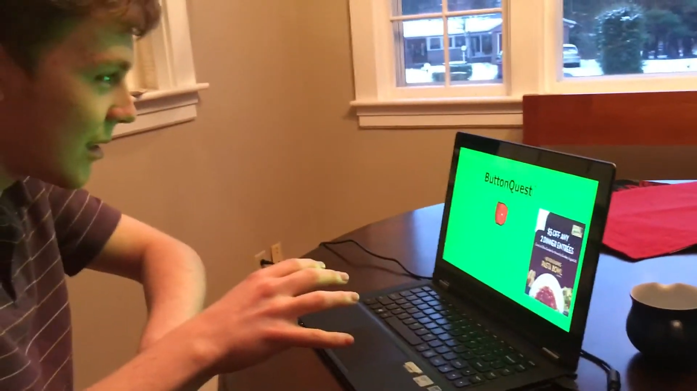
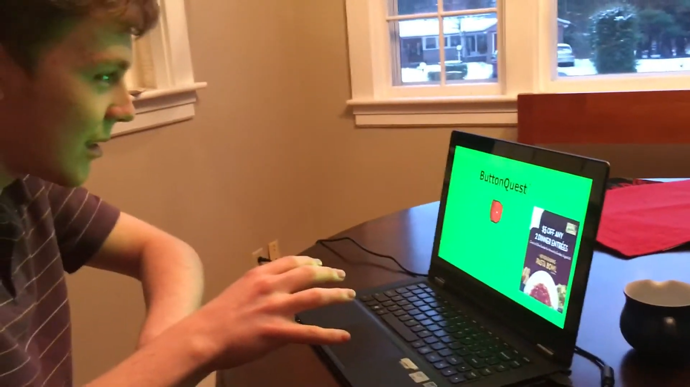


In the middle of that senior year—the week of mid-terms, to be exact—our mutual friend Jack Warnock went away on some sort of week-long community service trip or something. Jack was the third member of a group chat we created about a year prior called “Big Trouble in Little Caesars” (for reasons not worth explaining), and in his absence, we felt it necessary to send him a ridiculously convoluted artistic tribute. Instead of studying for mid-terms, we spent the week exploring the capabilities of an instant messaging app as a storytelling device.
Click here to view all five installments of World Without Warnock.
Without further ado, and presented in approximately the same format Jack received them, here are the five installments of World Without Warnock:
Tom and John arrived at school on Tuesday morning and went about their regular routine. Initially, nothing seemed amiss, but they soon noticed that something was... missing.
It started when they were rapping.
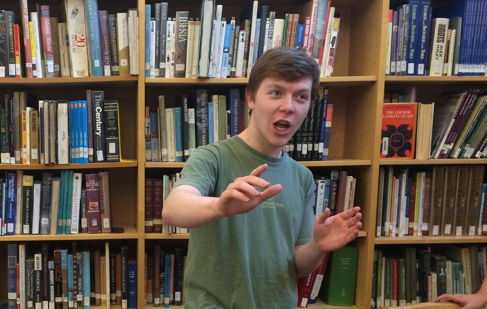"Yo my name is John, it's a really great day, now I'ma pass it to the Screenwriting TA" ♬
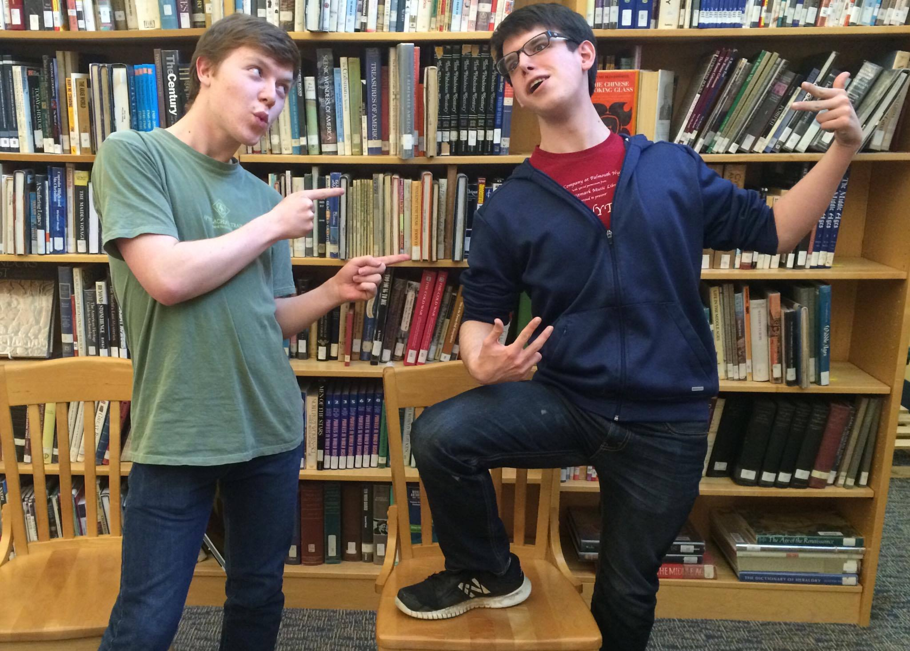"Yo my name is Tom, and I don't want to trouble you, but I'ma pass it down to my boy JW" ♬

"..."

Then they realized what was wrong. They were without Warnock. They were one Little Caesar too few.
What are they going to do? Will they survive a week in a world without Warnock?
The next day, Tom and John decided that they needed to fill the large, gaping Jack-shaped hole in their lives.

New Jack joined Tom and John in all the activities that they had partaken in with old Jack. They had a grand old time. It was as if nothing had changed.
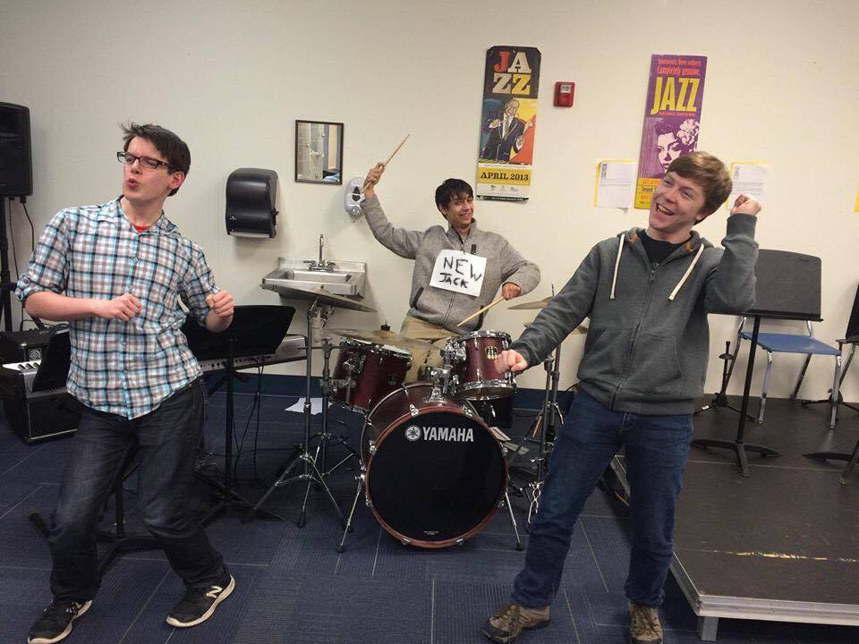 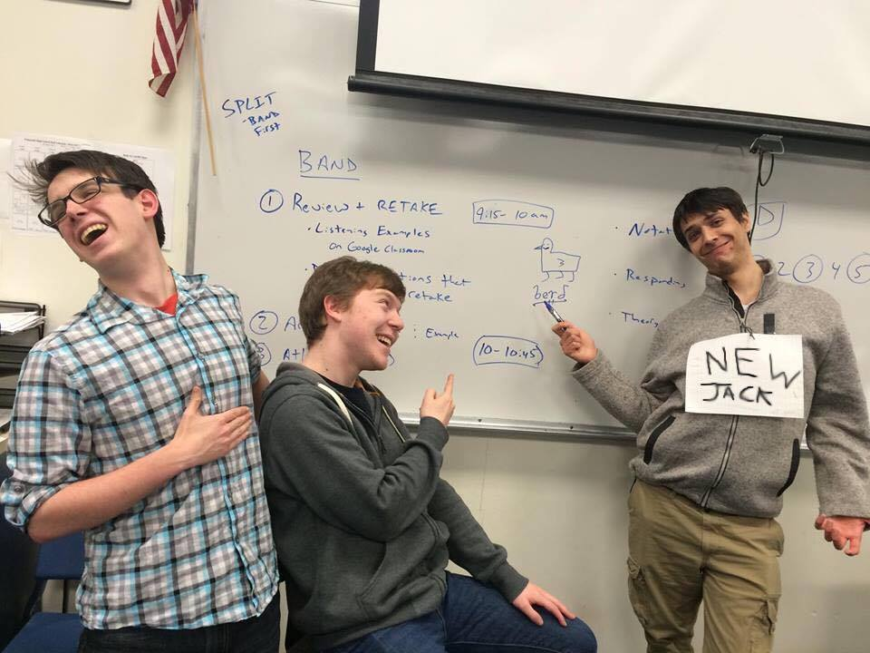It was a sad time when New Jack had to leave them that evening. But then he revealed his reasons for leaving:
"Well boys," he said, putting on a strange hat. "I've got to go to my Big Lebowski Hating Club."
Tom, Jack, and Old Jack loved The Big Lebowski. This new Jack couldn't possibly be an apt replacement for Warnock. And so they were left once again with a hole in the trio and in their hearts.


"Johnny," said Tom with exasperation, "I just don't know what to do without Jack."

"Perhaps we just need to take a walk," John said, timidly.

And so, Tom and John meandered aimlessly into the woods, knowing not what there travels would bring them.
Then...
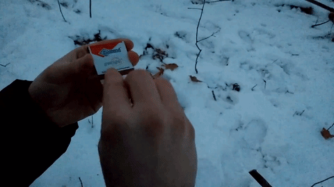 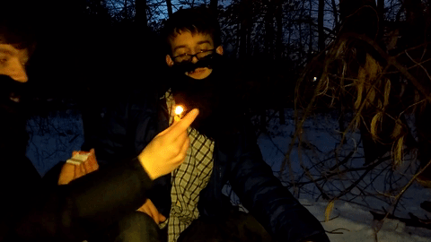
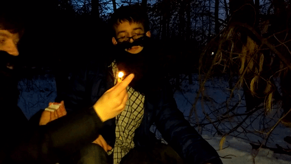

"Elder John, it has been many suns since the light of Jack left our lives."

"Yes, Elder Tom, but we have found new kinship in the glory of nature."
 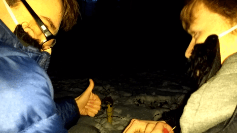
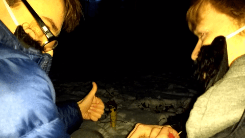
"Indeed, Elder John. Squash Jack has given us plentiful company."

 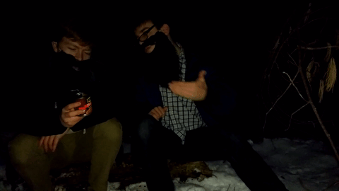
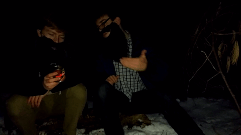
"Let us feast and be merry."

Text text text
Text text text
Text text text